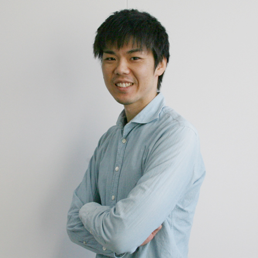

I am an Assistant Professor at Department of Communication Engineering at Tohoku University, Japan. I received my Ph.D. degree from Tohoku University and a B.S. from Yamagata University in 2011 and 2006, respectively.


Emai: tomo (at) iic.ecei.tohoku.ac.jp
Tel: +81-22-795-7088
Fax: +81-22-795-7090
Address: 6–6–05 Aoba Aramaki, Aoba, Sendai, 980–8579, Japan（仙台市青葉区荒巻字青葉6-6-05 電気系1号館 621号室）
Lab Website: Laboratory for Image Information Communications (In Japanese)
My research interests are in pattern recognition and image processing. I am especially interested in recognizing visual objects with their structure. Also structural data, such as chemical compounds, is my research target.
Tomo Miyazaki, Tatsunori Tsuchiya, Yoshihiro Sugaya, Shinichiro Omachi, Masakazu Iwamura, Seiichi Uchida, Koichi Kise
"Automatic Generation of Typographic Font from a Small Font Subset"
IEEE Computer Graphics and Applications, 2019 (Minor Revision)
Yoshito Nagaoka, Tomo Miyazaki, Yoshihiro Sugaya, Shinichiro Omachi
"Automatic Mackerel Sorting Machine using Global and Local Features"
IEEE Access, vol. 7, pp. 63767-63777, 2019 [paper] [code]
Tomo Miyazaki, Shinichiro Omachi
"Structural Data Recognition with Graph Model Boosting"
IEEE Access, vol.6, pp.63606-63618, 2018 [paper]
Kazuya Ogasawara, Tomo Miyazaki, Yoshihiro Sugaya, Shinichiro Omachi
"Object-Based Video Coding by Visual Saliency and Temporal Correlation"
IEEE Transactions on Emerging Topics in Computing (TETC), 2017 [paper] (in press)
The Eighth International Conferences on Pervasive Patterns and Applications, Best Paper Award (March 22, 2016)
Kento Tonosaki, Yoshihiro Sugaya, Tomo Miyazaki, Shinichiro Omachi
"Indoor Localization by Map Matching Using One Image of Information Board"
Proceedings of The Eighth International Conferences on Pervasive Patterns and Applications (PATTERNS), pp.22-26, 2016 [URL]
The Eighth International Conferences on Creative Content Technologies, Best Paper Award (March 22, 2016)
Kazuya Ogasawara, Tomo Miyazaki, Yoshihiro Sugaya, Shinichiro Omachi
"Object-based Video Coding for Arbitrary Shape by Visual Saliency and Temporal Correlation"
Proceedings of The Eighth International Conference on Creative Content Technologies (CONTENT), pp.13-16, 2016 [URL]
IEEE Sendai Section, The Best Paper Prize (December 7, 2009)
Tomo Miyazaki, Shinichiro Omachi, Hirotomo Aso
"Structure Extraction from Multiple Decorative Character Images"
Tohoku-Section Joint Convention Record of Institutes of Electrical and Information Engineers, 2A-11, 2009 [URL]
菅谷 至寛, 外崎 健人, 大町 真一郎, 宮崎 智,
"情報端末、位置推定方法、および位置推定プログラム"
特願2016-056139，特開2017-173001
大町真一郎, 長岡禎人, 宮崎 智, 菅谷至寛, 山下龍麿, 菅原道晴, 小野寺政行
"魚選別装置、魚選別方法、魚種類推定装置、及び、魚種類推定方法"
特願2018-018601